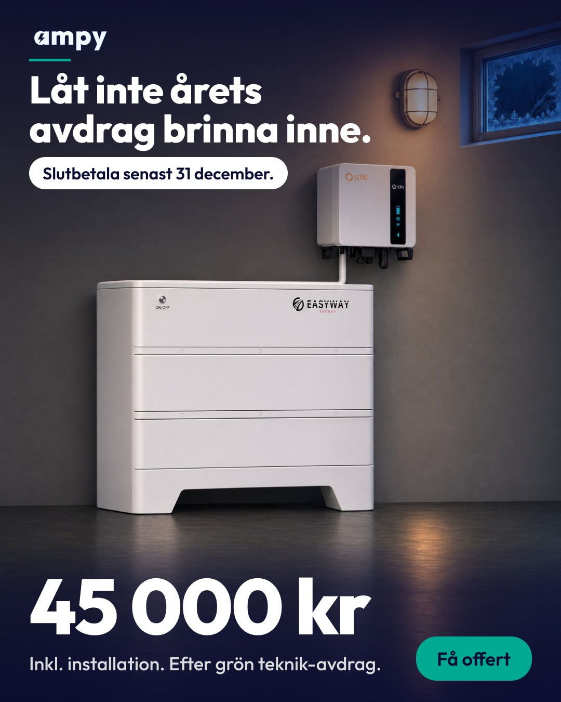
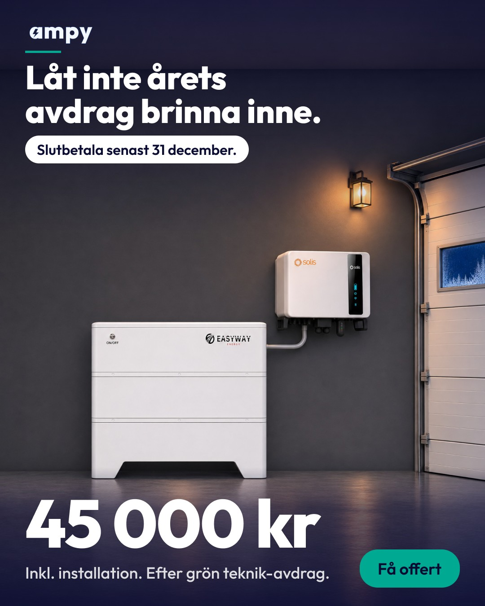
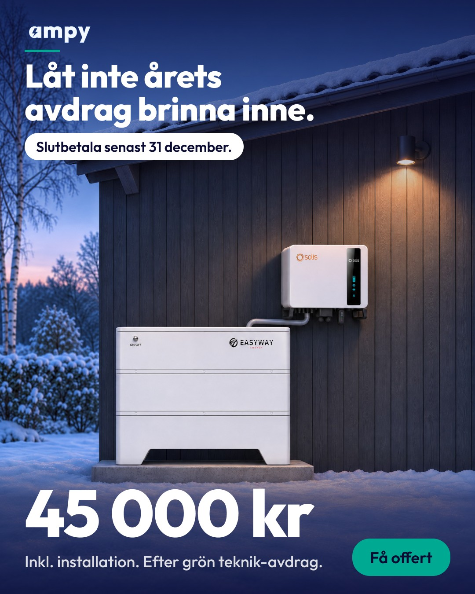
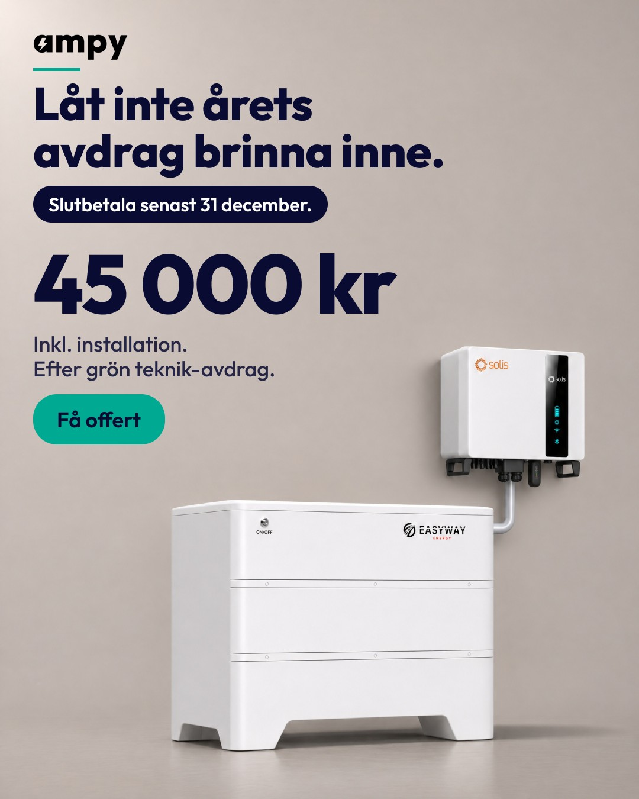
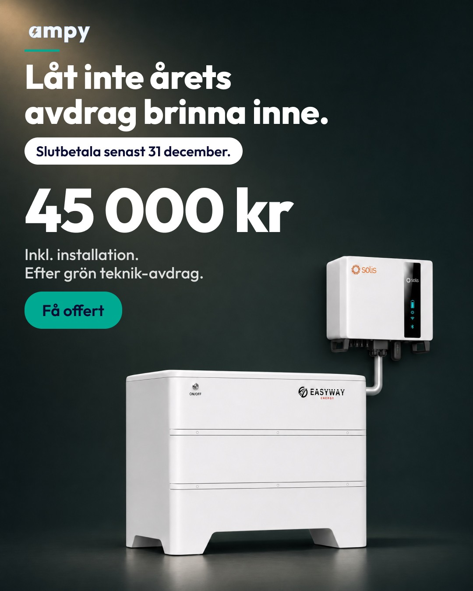
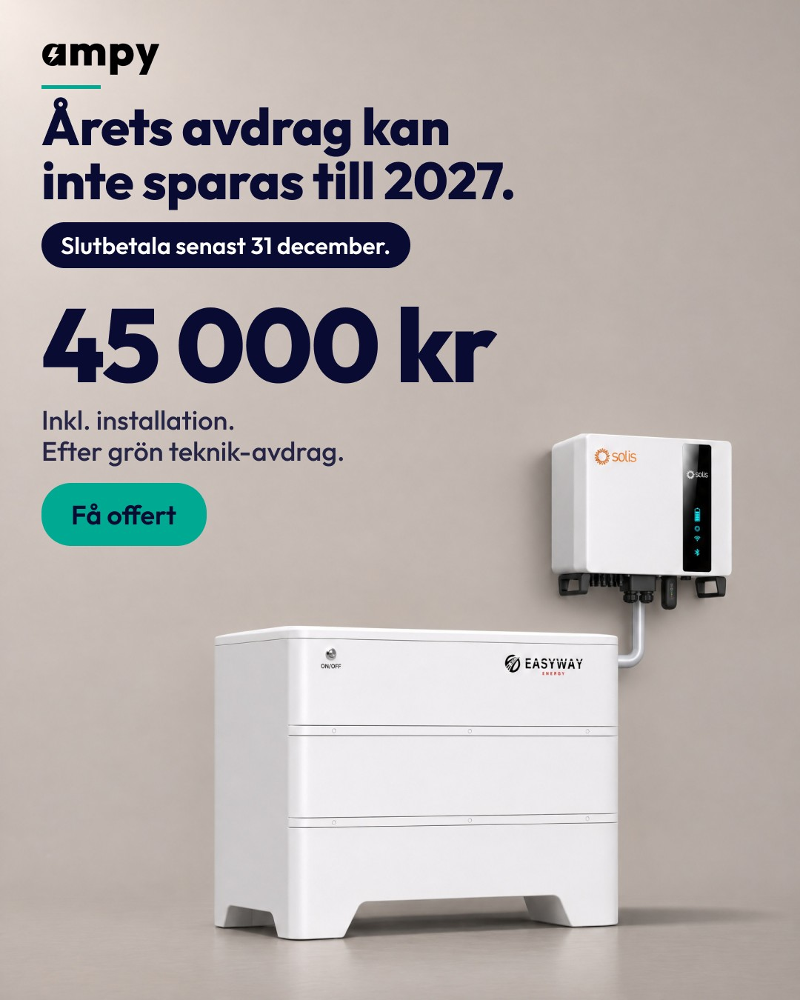
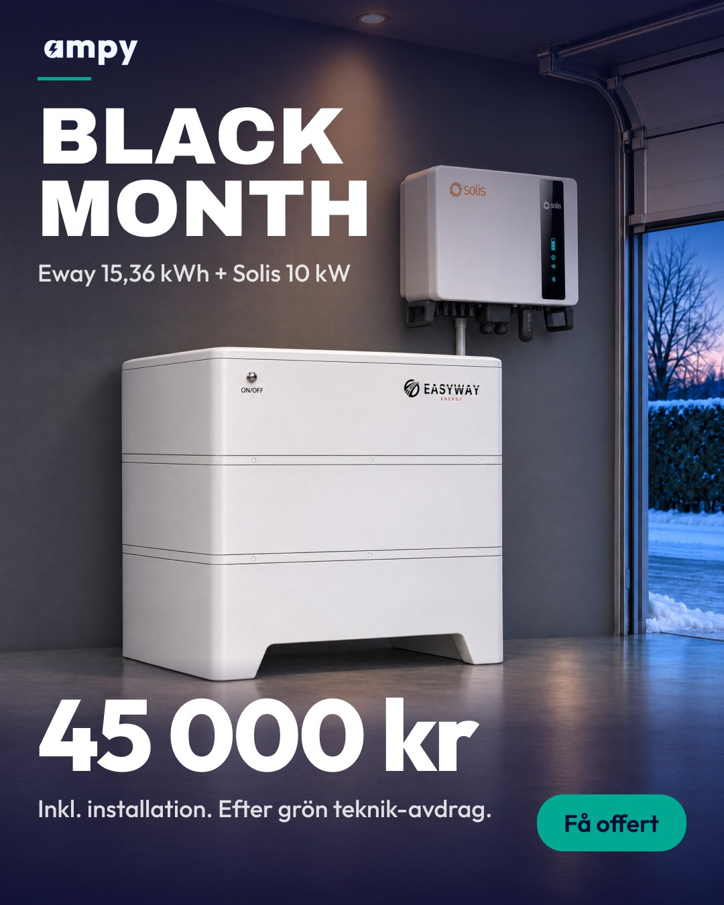
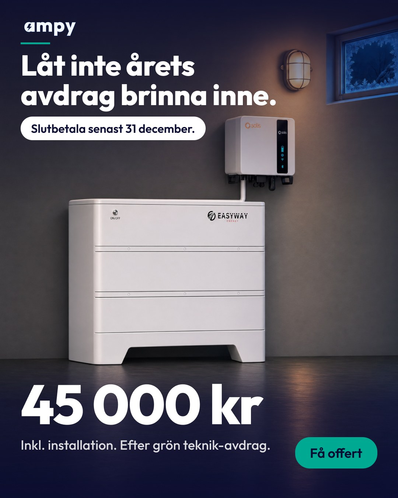
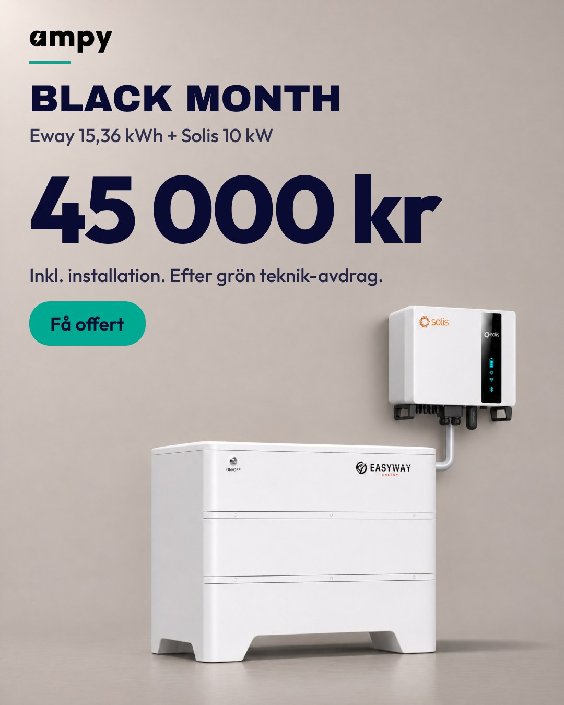
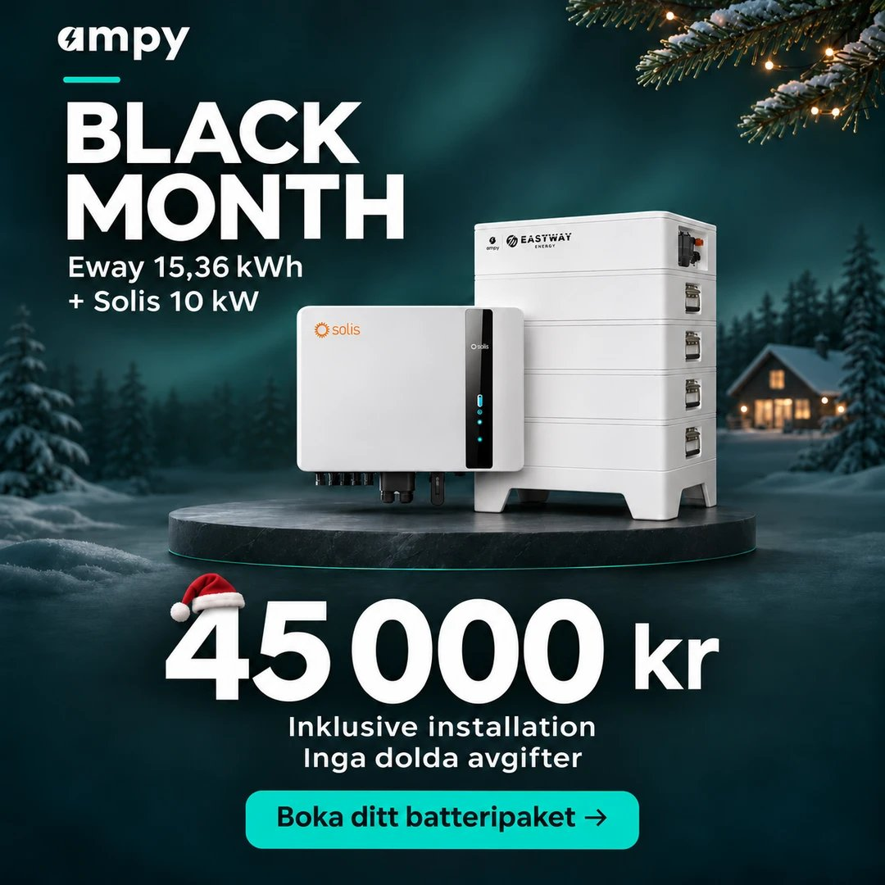

Uppdrag 70 · v2 · 2026-11-11
Batteriannonserna gjorda om från grunden: tre riktningar
Underlag: 47 riktiga installationsfoton, 68 svenska och 59 globala konkurrentbilder, oberoende granskning av v1 och QA av proven (Fable). Allt finns i Figma högst upp på sidan "Batteri nov-dec".
Vad som ändrats mot v1
- Batteriet är hjälten: i förgrunden, ca 2–2,5 gånger växelriktarens yta. Solis sitter på väggen, snett bakom, med ett rör som går bakom batteriet. Ingen stolpe.
- Bara riktiga miljöer: garage, teknikrum/källare eller en premiumscen. Aldrig hall eller kök.
- Rätt produkt: styrbox och två moduler, slät framsida med ON/OFF och EASYWAY. Kontrollerat mot tillverkarens bilder och Vintecs foto av exakt vårt par.
- Färre element, större pris: logga, rubrik, pris med villkor, knapp. Pillret säger bara "Slutbetala senast 31 december."
Brinna inne · 10 nya annonser (6 foto + 4 grafiska), 4:5

F2 · Teknikrum

F3 · Garage kväll

F6 · Fasad vinter (kräver Heated-versionen, G3)

G1 · Prisaffisch ljus

G2 · Prisaffisch mörk

G4 · Kan inte sparas till 2027
Riktning 1 · Scenen (säljarnas grepp, gjort rätt)
Riktning 2 · Huset (ärlig installation, QA:s favorit)

Black Month, garage

Brinna inne, teknikrum
Riktning 3 · Prisaffischen (ljus studio, priset är hjälten)

Black Month. Brinna inne-versionen pausad tills denna är godkänd.

Jämförelse: säljarnas annons (fel produkt i bilden: "EASTWAY", fyra moduler).
Kvar innan live
- Du väljer riktning (eller mix) → jag gör 9:16 och fler koncept i den.
- G1 efter avdrag, G7 slutdatum för Black Month, budgetpropositionen 12/11 kl. 08.00 för Brinna inne.
- Kameran blir fortfarande nästan rak framifrån (batteriets kortsida syns lite) – nästa runda pressar vinkeln mer.